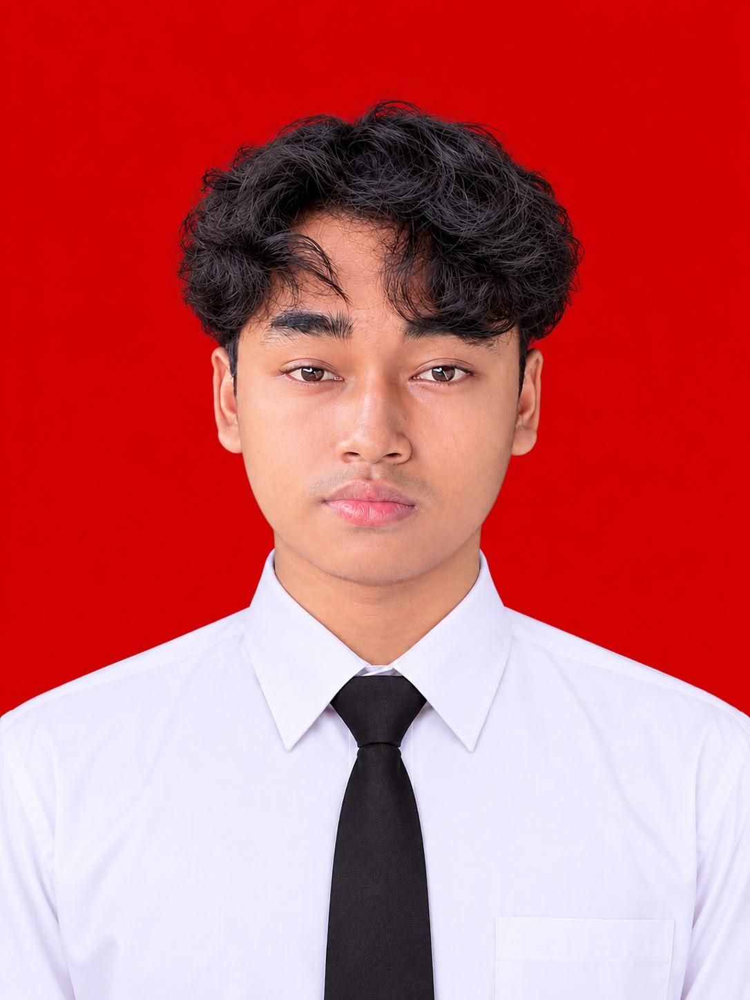

Politeknik Negeri Jember
Teknik Komputer
Mahasiswa Jurusan IT Biasa.
SELAMAT DATANG DI PORTOFOLIO SAYA
Saya adalah pribadi yang senang mempelajari teknologi, mengembangkan ide, dan membuat solusi digital melalui pemrograman.

01 / PERKENALAN
Saya percaya bahwa setiap hal besar dimulai dari rasa ingin tahu dan kemauan untuk terus belajar.
Perkenalkan, saya Fairuz Dzaki Dwi Syahputra, seorang mahasiswa dari Teknik Komputer di Politeknik Negeri Jember. Saya memiliki ketertarikan pada bidang teknologi, pemrograman, dan pengembangan aplikasi. Saya senang mengeksplorasi hal baru, bekerja sama dalam tim, serta mengembangkan kemampuan melalui proyek dan pengalaman.
02 / PERJALANAN
Teknik Komputer
Mahasiswa Jurusan IT Biasa.
IPA UMUM
Siswa SMA Biasa.
03 / KEMAMPUAN
Berikut beberapa kemampuan dan perangkat yang sedang saya pelajari atau gunakan.
HTML, CSS, JavaScript, C++
Visual Studio Code, Qt Creator, Arduino IDE
Arduino, ESP8266, sensor dasar
Komunikasi, kerja tim, pemecahan masalah
04 / HASIL KARYA
Ganti contoh proyek berikut dengan karya yang pernah Anda buat.
INTERNET OF THINGS
Contoh proyek pemantauan data sensor menggunakan ESP8266 dan antarmuka aplikasi.
DESKTOP APPLICATION
Contoh aplikasi desktop dengan Qt Widgets untuk menampilkan dan mengelola data.
WEB DEVELOPMENT
Website pribadi yang menampilkan profil, keahlian, proyek, dan informasi kontak.
05 / DOKUMEN
Unduh CV saya untuk melihat informasi pendidikan, pengalaman, dan kemampuan secara ringkas.
06 / HUBUNGI SAYA
Terbuka untuk diskusi, kolaborasi, dan kesempatan belajar bersama.